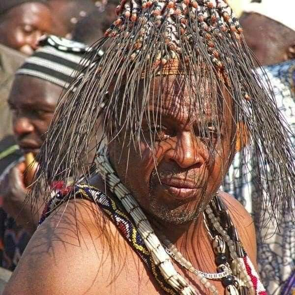
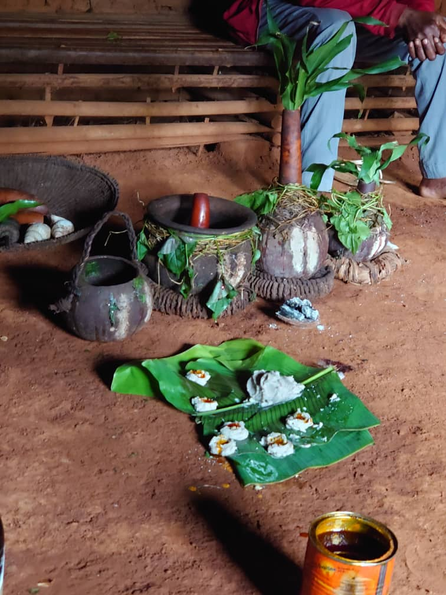
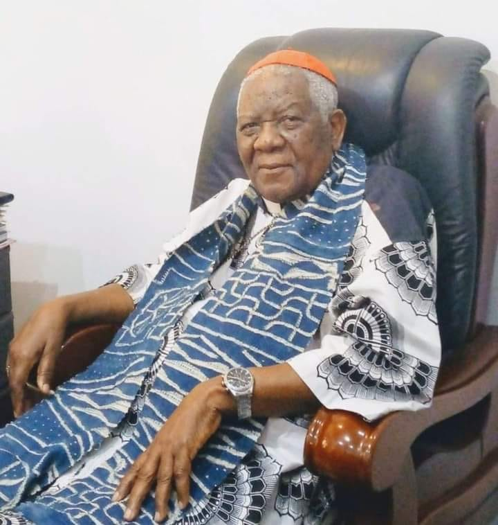
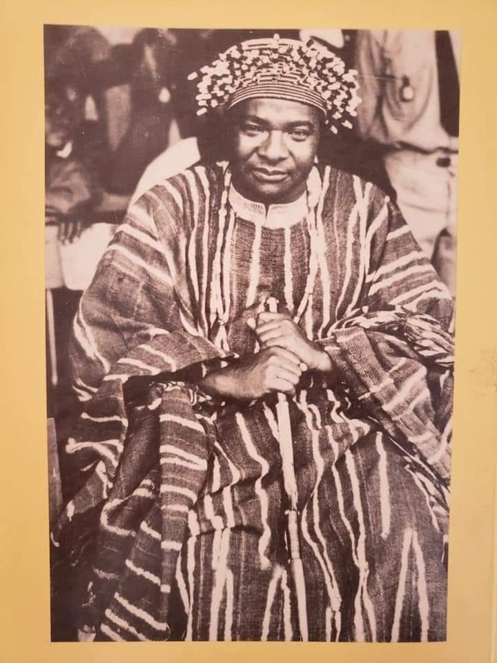

Nso’ is a word that refers to both a people and a Fondom. According to oral history, the Nso’
people
migrated from Tikari in the north of Cameroon following a bloody conflict over succession after
the
death of King Tinki in the late 1300s. Ngonnso’, the founder of the Nso’ dynasty, along with two
of
her brothers, Nchare Yen and Mbombam, and their respective followers, left their father's clan.
Ngonnso’ and her brothers later parted ways and settled in a place called Mbo’nso’.
Subsequently,
they moved to Ndzennso’, Kovifem, Taavisa, back to Kovifem, and then to Kimbo, presently called
Kumbo. The tribe was named after their esteemed leader, Ngonnso’. This is one of the most
organized
and largest tribes in the Grassfields and Cameroon in general. They are essentially a race of
warriors and engaged in wars with almost all their neighbors except for those of Babungo and
adjoining Bikom. The Nsungnin seem to have followed the Nso from Banyo and taken up a position
in
the hilly country to the north. Nso’ also played an important role in resisting German colonial
rule.
THE FON & ADMINISTRATION

Fon Sehm Mbinglo I. Paramount Fon of Nso
The Fon is the traditional ruler and serves as both the head of the traditional government and
the
chief religious authority, responsible for appeasing the ancestors. He is supported by seven
notables known as Vibais, who are Shufais with positions rooted in complex history. These
include
Shufai Ndzendzev Traditional Prime minister, Tahnkum, Doh, Ruun, Tsenlah, Lun, and
Yuwar.
Over the years, other Shufais have
been appointed by the Fon of Nso, although they hold lesser positions in the palace hierarchy
without significant political influence. The Fon's power is balanced by regulatory groups such
as
the Nwerong, which acts as the government's security arm and enforces the Fon's
decisions. The Nwerong is exclusively responsible for enthroning a new Fon and replacing Fais
and
Shufais after their deaths. Members of the royal families, except for the Fons, are not
permitted to
join the Nwerong. The Ngiri, similar to the Nwerong, is reserved only for princes. New Fons are
chosen from a pool of eligible princes through a secretive process, preventing potential
corruption.
Nto' Nso' and its occupants
A paper Published by: B. CHEM-LANGHËË, VERKIJIKA G. FANSO and E.M. CHILVER
establishes the following:
The Fon alone can go anywhere he likes in ngwerong la': the door on the western
wall of
nggay yeengwerong is the Fon's own entrance. Apart from the Fon, entry into
nggay
yee
ngwerong is limited to nggang se ngwerong, those who have acquired membership in
this
society, and its own guardian, sheey woo nggang. The mask lodges of kibarangko'
and
jwi
ngwerong are closed to all except their own initiates during their sessions.
Otherwise
the
courtyards and houses are free to entitled persons. But it should be stressed that only male
retainers, a few vibay, and a very few others initiated in special circumstances we shall
deal
with later, can come to ngwerong la'. Generally speaking it is a strictly male
enclave
from
which royals and commoners are excluded.
CULTURE AND TRADITION

Ntangri. A traditional rite
Masqerades, play an integral part in the culture and tradition of the Nso people.
Masqerades display on important ceremonies especially funerals and cleansing ceremonies and hail
from both the Ngwerong and Ngiri sanctums.
They may sometimes be refered to by the locals as Shiv
The Mfu' or Njong is another interesting group made up of warriors. Each village has
Njong hall where members gather every eighth daythe traditional week.
The
Njong hall is a
place for village men exhange information and plan the development of their communities.
These halls are masterpieces of craft with carved wooden piles.
organize communal work. Mfu houses are often richly decorated with carved posts inside
and outside.
Nso culture is showcased during funerals and the cultural week festival Ngam
Ngonso which assemles the various aspects of Nso tradition. Jujus are
prominentlydisplayed from the heitage sites and the palace to other parts of Kimbo, giving first
hand experience to both foreighners and Nso’ people.
A rearcher Noela Kinyuy Banla in an article titled Nso’ traditional religion and
climate forecast: a critical photographic analysis in The British Academy Journal
2024 states: The Nso’ society is established in several orders that shape every
activity.
Traditional religion is one of the established orders which acted and continues to act as a
knowledge system through which
events are examined and carried out. Religious custodians/priests use this indigenous knowledge
in
climate
monitoring. In this light, ancestors or gods are consulted through ritual sacrifice to forecast
future and present events beyond the physical. As priests of traditional religion, the Fons
the
head of
traditional government and religious authority in Nso’ and the Nwerong an important
sacred society which performs legislative and judicial functions as well as rituals for
ecological issues
act as
mediators between the dead and the living to forecast climate. The paramount Fon of Nso’ takes
the
lead
in this activity of appeasing the ancestors and seeking solutions from them. This is because he
is
the
head of the traditional government in charge of consulting the gods of the land. He is regarded
as
the
paramount Fon because there are auxiliary Fons in Nso’ who pay allegiance to him.

Christian Cardinal Tumi (1930–2021) was a prominent Cameroonian prelate of the
Roman Catholic
Church. Born in Kikaikelaki, Nso’ Cameroon, he was ordained as a priest in 1966 and
later
became
the Archbishop of Garoua 1984. Cardinal Tumi was known for his strong advocacy
for
social justice, peace, and democracy in Cameroon.
He was a vocal critic of corruption and human rights abuses in the country, earning
respect
and sometimes controversy for his outspoken stance. ordained a cardinal in 1988 by His
Holiness Pope John
Paul II, he was one of the leading religious figures in Africa, contributing
significantly
to both the church and civil society until his retirement and even after, remaining an
influential voice in Cameroon's socio-political landscape.

Professor Bernard Nsokika Fonlon (1924-1986) was a Cameroonian intellectual,
politician, and
promoter of bilingualism. He held significant governmental roles before becoming a
professor
at the University of Yaoundé. Fonlon founded Abbia: Cameroon Cultural Review and
authored
several works on culture and bilingualism. He is remembered for his contributions to
education, literature, and national unity he earned the chieftency Shufai Ntoo
ndzev